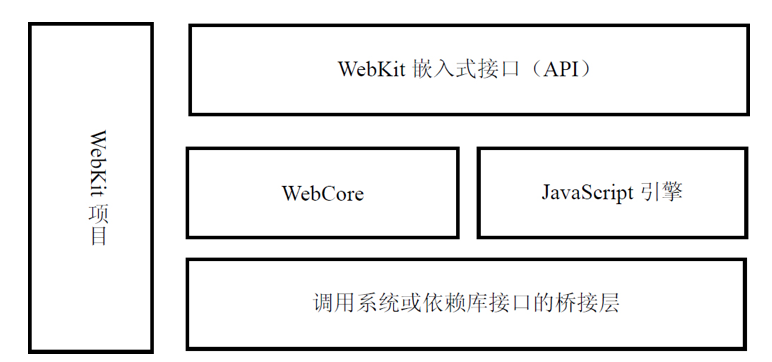
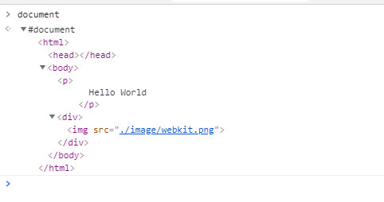
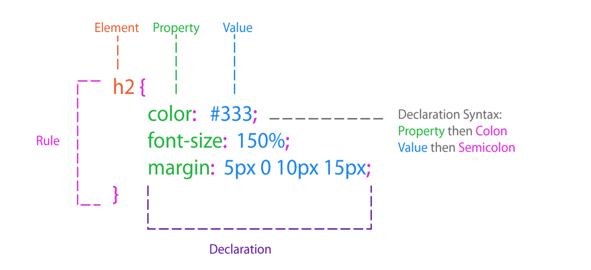
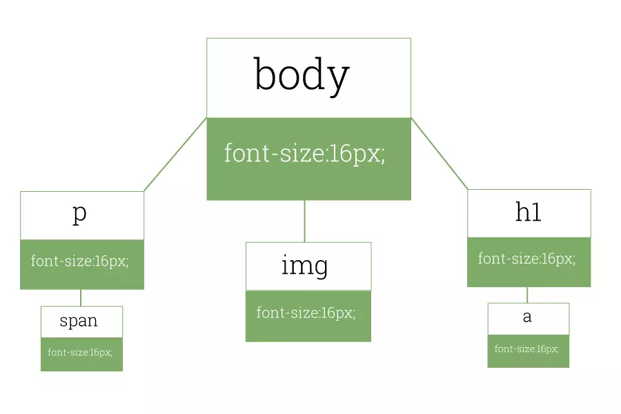
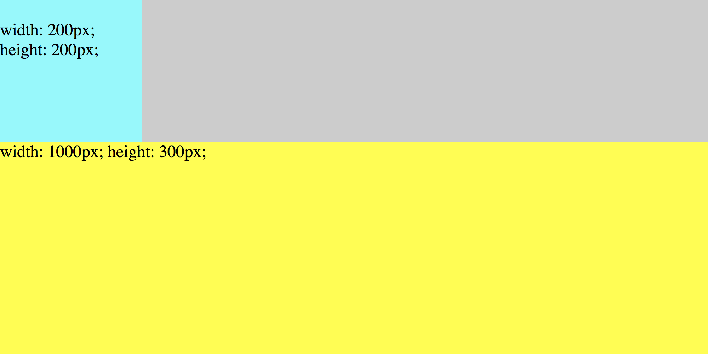
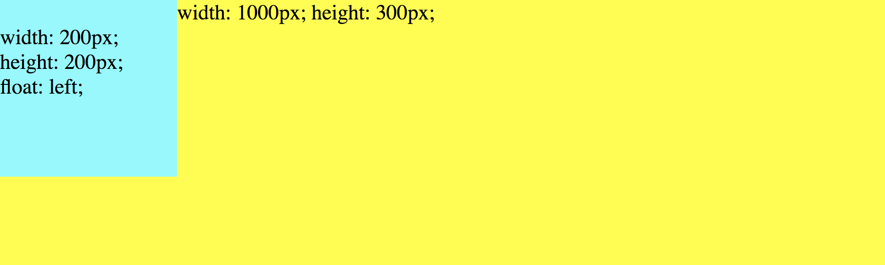
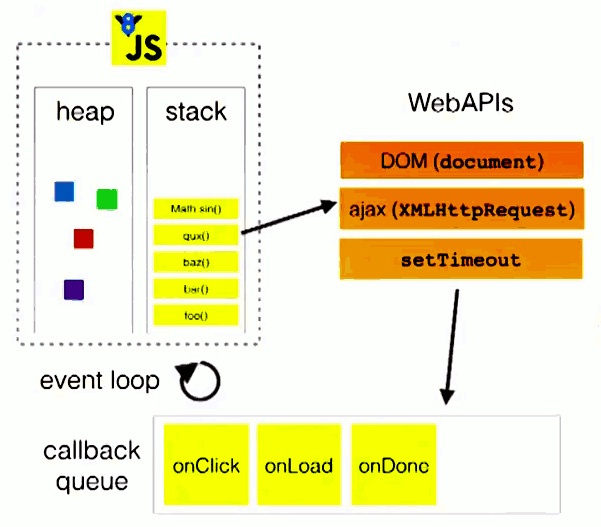

<!DOCTYPE html>
<html lang="en">
<head>
    <meta charset="UTF-8">
    <meta name="viewport" content="width=device-width, initial-scale=1.0">
    <meta http-equiv="X-UA-Compatible" content="ie=edge">
    <title>浏览器是怎么工作的</title>
    <link rel="stylesheet" href="./reveal/css/reveal.css">
    <link rel="stylesheet" href="./reveal/css/theme/white.css">
    <link rel="stylesheet" href="./reveal/lib/css/zenburn.css">
    <style>
        .image-preview-wrap {
            position: absolute;
            left: 0;
            right: 0;
            top: 0;
            bottom: 0;
            background: #ccc;
            z-index: 1;
        }
        .image-preview-img {
            position: absolute;
            left: 0;
            right: 0;
            top: 0;
            bottom: 0;
            z-index: 1;
            margin: auto;
            max-width: 100%;
            width: 90%;
        }
        .image-preview-img-height {
            position: absolute;
            left: 0;
            right: 0;
            top: 0;
            bottom: 0;
            z-index: 1;
            margin: auto;
            max-width: 100%;
            height: 100%;
        }
        .image-row {
            width: 100%;
            overflow: hidden;
        }
        .image-row image {
            max-width: 100%;
        }
        .image-row .col-6 {
            float: left;
            width: 50%;
        }
        .image-row .col-4 {
            float: left;
            width: 33%;
        }
        .p20 p {
            font-size: 20px;
        }
        .u30 ul, .u30 ol {
            font-size: 30px;
        }
        .u24 ul, .u24 ol {
            font-size: 24px;
        }
        .page {
            width: 100%;
            height: 60vh;
        }
    </style>
</head>
<body>
    <div class="reveal">
        <div class="slides">
            <section>
                <section>
                    <h1>浏览器是怎么工作的</h1>
                </section>
                <section data-markdown>
                    ## 浏览器的主要组件

                    - 用户界面
                    - 网络
                    - 呈现引擎(Rendering Engine 渲染引擎)
                    - JavaScript解释器
                    - 数据存储

                </section>
            </section>
            <section>
                <h2>呈现引擎</h2>
                <ul>
                    <li>Chromium - Blink - Chrome</li>
                    <li>Webkit - WebCore - Safari</li>
                    <li>Trident - IE</li>
                    <li>Gecko - Firefox</li>
                    <li>Presto - Opera(现在用Blink)</li>
                </ul>
                
            </section>
            <section>
                    <h3>HTML解析</h3>
                    <pre><code data-html contenteditable>
&lt;html&gt;
&lt;body&gt;
    <p>
        Hello World
    </p>
    <div>
        
    </div>
&lt;/body&gt;
&lt;/html&gt;
                        </code></pre>
                    
                    
            </section>
            <section>
                    <section>
                        <h3>CSS解析</h3>
                        <div class="image-row">
                            <div class="col-4"></div>
                            <div class="col-4"></div>
                            <div class="col-4"></div>
                        </div>
                </section>
                <section>
                        <h4>逆向解析</h4>
                        <pre>
                            <code data-html contenteditable>
<div>
    <div class="box">
        <p><span>s1</span></p>
        <p><span>s2</span></p>
        <p><span>s3</span></p>
        <p><span class='red'>s4</span></p>
    </div>
</div>
                            </code>
                            <code data-css>
div > div.box p span.red{
    color:red;
}
                            </code>
                        </pre>
                </section>
                <section>
                    <h4>优先级</h4>
                    <ul>
                        <li>如果声明来自于“style”属性，而不是带有选择器的规则，则记为 1，否则记为 0 (= a)</li>
                        <li>记为选择器中 ID 属性的个数 (= b)</li>
                        <li>记为选择器中其他属性和伪类的个数 (= c)</li>
                        <li>记为选择器中元素名称和伪元素的个数 (= d)</li>
                        <li class="fragment">数位之间没有进制</li>
                    </ul>
                </section>
            </section>
            <section>
                <section data-markdown>
                    ### 呈现树
                    DOM Tree 和 CSSOM Tree 结合生成Render Tree
                    这是由可视化元素按照其显示顺序而组成的树，也是文档的可视化表示。它的作用是让您按照正确的顺序绘制内容。
                    
                </section>
                <section data-markdown>
                    #### DOM树与呈现树的关系
                    
                </section>
                <section data-markdown>
                    #### 呈现器类型
                    每一个呈现器都代表了一个矩形的区域，通常对应于相关节点的 CSS 框。框的类型会受到与节点相关的“display”样式属性的影响。(inline, block)
                </section>
            </section>
            <section>
                <section>
                    <h3>布局</h3>
                    <ul>
                        <li>呈现器在创建完成并添加到呈现树时，并不包含位置和大小信息。计算这些值的过程称为布局。</li>
                        <li>HTML采用基于流的布局模型，意味着大多数情况下只要一次遍历就能计算出几何信息(位置，大小)，处于流中靠后位置的元素通常不会影响靠前位置元素的几何特征。</li>
                    </ul>
                </section>
                <section>
                    <h4>流</h4>
                    <ul class="fragment">
                        <li>文档流(普通流)</li>
                        <li>文本流</li>
                        <li>绝对定位</li>
                    </ul>
                    <div class="image-row">
                        <div class="col-4 fragment"></div>
                        <div class="col-4 fragment"></div>
                        <div class="col-4 fragment"></div>
                    </div>
                </section>
                <section data-markdown>
                    #### 全量和增量
                </section>
            </section>
            <section data-markdown>
                ### 绘制
                
                - 全量增量
                - 重排重绘
            </section>
            <section>
                <section data-markdown>
                    ## JavaScript引擎
            
                    - V8 - Chrome
                    - JavaScriptCore - Safari
                    - Chakra - IE
                    - SpiderMonkey - Firefox
                    - Carakan - Opera(现在用V8)
                </section>
                <section data-markdown>
                    ### 解析

                    - 语法检查
                        - 词法分析 将输入分割为一个个有意义的词块(token)
                        - 语法分析 确定词法分析器分割出的token是如何彼此关联的
                    - 运行阶段
                        - 预解析 创建执行上下文。(作用域链，this，声明提升)
                        - 运行
                </section>
                <section data-markdown>
                    ### 垃圾回收

                    - 标记清除(mark-and-sweep)
                    - 引用计数(reference counting)
                </section>
                <section data-markdown>
                    ### 线程
                    
                    - JS单线程
                    - 浏览器多线程
                    - 互斥
                </section>
                <section class="u30">
                    <h3>事件循环(event loop)</h3>
                    <ul>
                        <li>所有任务都在主线程上执行，形成一个执行栈（execution context stack）。</li>
                        <li>主线程之外，还存在一个”任务队列”（task queue）。系统把异步任务放到”任务队列”之中，然后继续执行后续的任务。</li>
                        <li>一旦”执行栈”中的所有任务执行完毕，系统就会读取”任务队列”。如果这个时候，异步任务已经结束了等待状态，就会从”任务队列”进入执行栈，恢复执行。</li>
                        <li>主线程不断重复上面的第三步。</li>
                    </ul>
                    
                </section>
                <section data-markdown>
                    #### 任务队列和任务源

                    - 一个event loop有一个或者多个任务队列。
                    - 相同任务源的任务，只能放到一个任务队列中。
                    - 不同任务源的任务，可以放到不同任务队列中。
                    - 同一个任务队列，能否容纳不同任务源的任务。（规范中没有明确说明）
                    
                    
                </section>
                <section data-markdown>
                    #### macrotask(宏任务) 和 microtasks(微任务)

                    - macrotask
                    - microtasks
                        - promise
                        - Object.observe
                        - MutationObserver
                </section>
                <section class="u30" data-markdown>
                    #### 事件循环细分版

                    1. 在tasks队列中选择最老的一个task,用户代理可以选择任何task队列，如果没有可选的任务，则跳到下边的microtasks步骤。
                    - 将上边选择的task设置为正在运行的task。
                    - Run: 运行被选择的task。
                    - 将event loop的currently running task变为null。
                    - 从task队列里移除前边运行的task。
                    - Microtasks: 执行microtasks任务检查点。（也就是执行microtasks队列里的任务）
                    - 更新渲染（Update the rendering）...
                    - 返回到第一步。
                </section>
                <section class="p20 u24" data-markdown>
                    #### Microtasks

                    > 当用户代理去执行一个microtask checkpoint，如果microtask checkpoint的flag（标识）为false，用户代理必须运行下面的步骤：
                    
                    1. 将microtask checkpoint的flag设为true。
                    - Microtask queue handling: 如果event loop的microtask队列为空，直接跳到第八步（Done）。
                    - 在microtask队列中选择最老的一个任务。
                    - 将上一步选择的任务设为event loop的currently running task。
                    - 运行选择的任务。
                    - 将event loop的currently running task变为null。
                    - 将前面运行的microtask从microtask队列中删除，然后返回到第二步（Microtask queue handling）。
                    - Done: 每一个environment settings object它们的 responsible event loop就是当前的event loop，会给environment settings object发一个 rejected promises 的通知。
                    - 清理IndexedDB的事务。
                    - 将microtask checkpoint的flag设为flase。
                </section>
                <section>
                    <iframe class="page" src="http://jsbin.com/fepuhoj/5/edit?js" frameborder="0"></iframe>
                </section>
                <section>
                    <iframe class="page" src="http://jsbin.com/giwasuh/2/edit?js" frameborder="0"></iframe>
                </section>
                <section>
                    <iframe class="page" src="http://jsbin.com/ziriyak/1/edit?js" frameborder="0"></iframe>
                </section>
            </section>
            <section>
                <h2>数据存储</h2>
                <h3 class="fragment">跨域</h3>
                <div class="fragment">一个域名的 JS ，在未经允许的情况下，不得读取另一个域名的内容。</div>
            </section>
        </div>
    </div>
    <script src="./reveal/js/reveal.js"></script>
    <script src="./reveal/lib/js/head.min.js"></script>
    <script>
        Reveal.initialize({
            progress: false,
            dependencies: [
                {src: './reveal/plugin/markdown/marked.js', condition: function() { return !!document.querySelector( '[data-markdown]' ); } },
		        {src: './reveal/plugin/markdown/markdown.js', condition: function() { return !!document.querySelector( '[data-markdown]' ); } },
                { src: './reveal/plugin/highlight/highlight.js', async: true, callback: function() { hljs.initHighlightingOnLoad(); } },
                { src: './reveal/plugin/zoom-js/zoom.js', async: true, condition: function() { return !!document.body.classList; } },
            ],
        });
    </script>
    <script src="./javascript/image-zoom.js"></script>
</body>
</html>